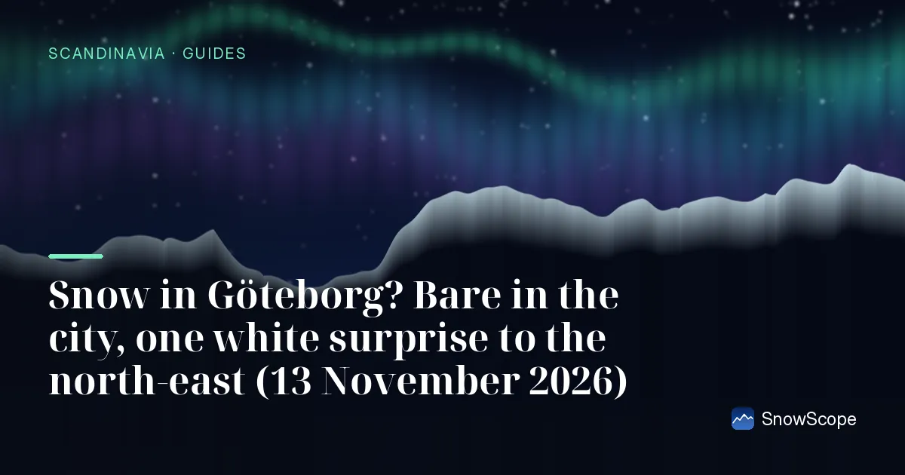

Snow in Göteborg? Bare in the city, one white surprise to the north-east (13 November 2026)
The coastal belt around Göteborg remains bare on Friday morning. All five stations within the city recorded 0 cm of snow, as they have throughout the week. Yet the overnight brought a pocket of white cover north-east of the urban area: Gunntorp, only 32 m above sea level but 39 km inland, measured 12 cm.
See the live snow forecast for Göteborg in the SnowScope appSnow depth, powder alerts and the 3D map, free.
A narrow band of snow, not a region
Gunntorp's 12 cm is striking next to its surroundings. Fotskäl, to the south-east at 132 m elevation, saw just 2 cm. Humlelo, east of the city, also 2 cm. Linhult, further east at 173 m, 3 cm. This pattern points to a single band of heavier precipitation that passed over the north-east, not a broad snowfall across the region.
The city stations—Askim, Kållered, Kärna, Härryda, and Mollsjönäs—all stayed at 0 cm. The coast, the urban core, and the southern approach to Göteborg are green. If you are planning a walk through the central parks this weekend, pack waterproof shoes, not skis.

November on the west coast: snow far from the sea
Göteborg lies outside the area for which we have a long winter history, so we cannot say whether 12 cm at Gunntorp is early, late, or typical for mid-November. What the stations show this week does match the west-coast pattern: when snow falls, it arrives inland and on higher ground first. The sea and the low-lying coast absorb heat and block the snow.
Early November is still autumn here. Even the rare snow that does land inland often does not last long. This year, the brief white cover north-east of the city is already under threat from the weekend forecast.
Rain and mild weather: the snow will not survive
Saturday brings temperatures near 10 °C with light rain—only a few millimetres. Sunday stays mild and mostly dry, between 5 and 9 °C. Monday is wetter, with roughly 9 to 16 mm of rain. Even Gunntorp's 12 cm, sheltered as it is from the warmest air near the sea, will likely melt away.
By next week, the snow band that passed through on Friday night will be a footnote in the forecast. The city will return to its November state: wet leaves, grey skies, and the kind of cold that calls for a waterproof coat, not winter gear.
Where to find snow if you need it this weekend
If you are searching for winter conditions close to Göteborg, you will not find them within an hour's drive. The snow is thin at Gunntorp and vanishing fast. Real winter snowpack—the kind that stays and builds—lies far north, in the mountains of Dalarna, Jämtland, and beyond.
For now, Göteborg itself is a place for autumn walks. The weekend is mild enough for paths in Slottsskogen and Delsjöområdet without winter boots. By Monday, waterproof outer layers and grip on wet ground are your main concerns.
What the numbers tell us
One station with 12 cm surrounded by neighbours with 2 or 3 cm is a reminder that snow, especially early in the season, is local and often brief. Weather at sea level is volatile. A band of cloud with slightly more water content, a small shift in wind, or a dip in temperature of just a degree can mean the difference between bare ground and 12 cm.
By Friday night, the event was already over. The next precipitation will fall as rain, not snow, and the mild air mass settling in means no new snow is likely before the weekend ends. When winter does arrive on the west coast—usually December or January—it comes differently: slower, colder, and with enough stability to stay.
Tips for skiers
- City walks this weekend need waterproof shoes, not winter boots. Wet leaves and autumn mud are the slip hazards, not ice or snow.
- If you live at Gunntorp or nearby and saw 12 cm on Friday, enjoy it briefly—the mild weekend will erase it.
- Monday's rain (9 to 16 mm) means puddles and damp paths. Bring an umbrella if you plan outdoor time in Slottsskogen or other parks.
- Looking for real snow? Head north to Dalarna, Jämtland, or further. The west coast is not the place for winter sports until the season shifts in December.
- Early-season snow at low elevation can hide rocks and roots. Even if snow persists beyond the forecast, treat it with caution.
About these numbers
Resort snow depths are the deepest snow on the resort's upper slopes on the date shown; they are estimates for an area, not a measurement at one point. Forecasts can change. Always read the official avalanche bulletin before going off-piste.
Cite this report
For research, teaching or the press: the numbers and charts are free to reuse under CC BY 4.0 with this citation.
SnowScope (2026), Snow in Göteborg? Bare in the city, one white surprise to the north-east (13 November 2026), https://snowscope.app/blog/en/2026/11/goteborg-snow-today-13-november-2026.html, accessed 2026-11-13
SnowScope (Atlas Labs). (2026, November 13). Snow in Göteborg? Bare in the city, one white surprise to the north-east (13 November 2026). SnowScope snow reports. https://snowscope.app/blog/en/2026/11/goteborg-snow-today-13-november-2026.html
BibTeX
@misc{snowscope2026goteborgsnowtoday13novem,
author = {{SnowScope (Atlas Labs)}},
title = {Snow in Göteborg? Bare in the city, one white surprise to the north-east (13 November 2026)},
year = {2026},
month = nov,
howpublished = {\url{https://snowscope.app/blog/en/2026/11/goteborg-snow-today-13-november-2026.html}},
note = {Published 2026-11-14 13:29 UTC; accessed 2026-11-13}
}· CC BY 4.0 · Methods, data and tools →
Follow Göteborg
Free: a message when fresh snow is coming, and the forecast every morning.
More snow reports

Tahko opens on made snow as natural cover melts. Expect 7–8 cm in the next week; rain and wet snow likely. Only 2 lifts running now.

Sälen December skiing: 28 cm on a typical 15 December and 48 % of winters with 30 cm in mid-December, down from the 1980s; Trysil next door does better.

Saariselkä has 4 cm measured at its station on 13 November. About 22 cm is forecast for the next week. The usual depth here on 14 November is 17 cm.